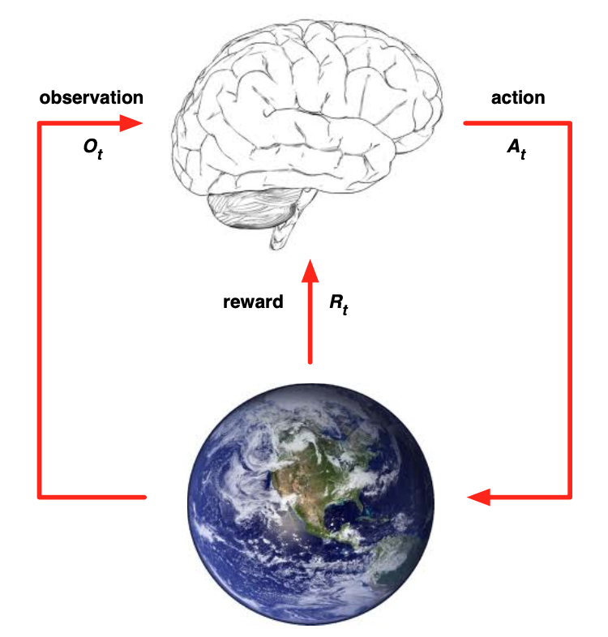
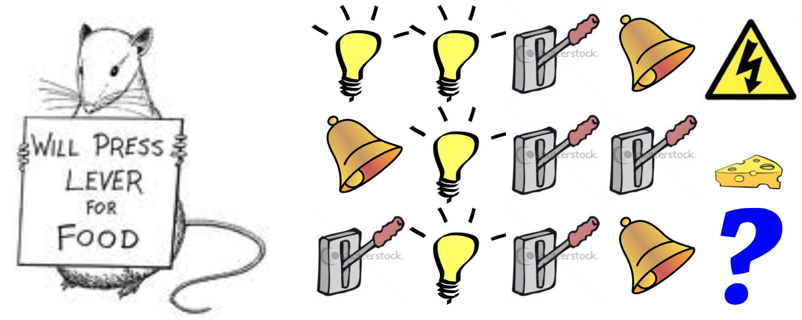
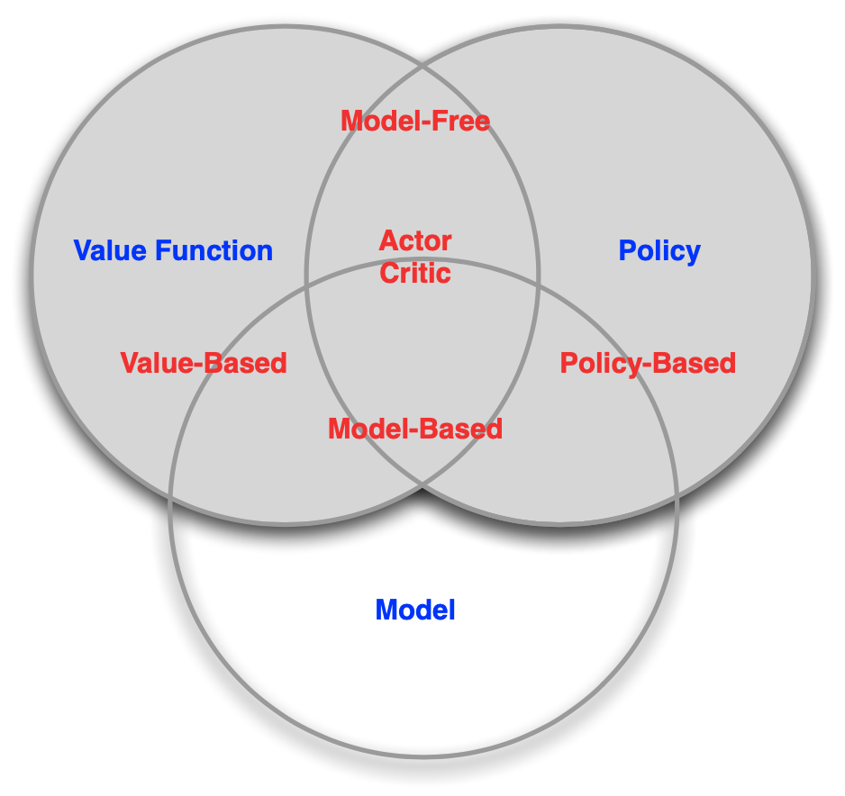

[David Silver强化学习]1·Introduction
1 About RL
强化学习是一个交叉领域，与计算机科学、工程学、数学、神经学、心理学、生态学等众多学科都有联系。
一般而言，我们把机器学习分成有监督学习、无监督学习和强化学习三大类。强化学习与另外二者有很大的区别：
- 没有监督，只有 reward 信号
- 反馈不及时，有延迟
- 时序非常重要，没有独立同分布的数据
- Agent 的动作会影响它后续能获得的数据
强化学习有很多应用，例如：控制直升机的特技飞行、下棋、管理投资、控制类人机器人行走、玩游戏……
2 The RL Problem
2.1 Rewards
奖励 reward 是一个标量的反馈信号，记 \(R_t\) 表示 \(t\) 时刻的奖励。
Reward Hypothesis：强化学习的所有目标都可以描述为最大化累积奖励的期望。
尽管目标很明确，但 agent 的决策过程却要考虑众多复杂的因素：当下的动作可能会造成长期影响、奖励可能会有延迟、牺牲短期奖励也许能带来长期奖励……
2.2 Environments

强化学习概览：
- 在时刻 \(t\)，agent 会：
- 执行一个动作 action \(A_t\)
- 收到对环境的观察 observation \(O_t\)
- 收到奖励 reward \(R_t\)
- 而 environment 会：
- 收到一个动作 action \(A_t\)
- 给出对环境的观察 observation \(O_{t+1}\)
- 给出奖励 reward \(R_{t+1}\)
对下标的一点说明：关于强化学习的符号下标，也即时间戳，有两种写法。一种人认为，执行一个动作 \(A_t\) 之后，环境已经发生了改变，因此此时返回的奖励下标应该 +1，即 \(R_{t+1}\)；另一种人认为，返回的奖励是对刚执行的这个动作的反馈，因此下标和动作保持一致，即 \(R_t\)。两种写法都可行，它们没有本质区别，仅仅是记号上的差异而已。本课程采用第一种写法，特此说明以免在后续公式中产生疑问。
2.3 State
定义历史 history 是一系列 observations、actions 和 rewards： \[
H_t=O_1,R_1,A_1,\ldots,A_{t-1},O_t,R_t
\] 而状态 state 定义为历史的函数，我理解为从历史中提取的我们想要的信息： \[
S_t=f(H_t)
\]
状态分为环境状态 environment state \(S_t^e\) 和 agent state \(S_t^a\)。
前者是环境的内在表述方式，环境根据当前状态和其运行机制给出下一时刻的观察和奖励；它通常对 agent 是不可见的；就算是可见的也可能包含无关信息。
后者是 agent 对环境的表述，是做决策所需要的信息，比如你看到的游戏画面。
定义：称一个状态是 Markov state 当且仅当 \[ \mathbb P(S_{t+1}\mid S_t)=\mathbb P(S_{t+1}\mid S_1,\ldots,S_t) \] 就是说下一时刻的状态仅决定于当前状态而与历史状态无关。根据定义，易知环境状态 \(S_t^e\) 是 Markov 的，历史 \(H_t\) 也满足 Markov 性质。
状态的定义方式对决策有很大的影响。课程举了下面这个非常形象的例子，如果你以历史三次观察到的事件为状态表示，你将预测会被电击；如果你以过去各事件发生次数为状态表示，你会觉得应该有奶酪；而如果你以整个历史为状态表示，你无法预测会被电击还是有奶酪。

当 agent 能够直接观察到 environment state，即 \(O_t=S_t^a=S_t^e\) 时，称为 fully observable environments，称该环境下的问题是 Markov decision process (MDP)，这是课程的核心。
相反，一些环境是 partially observable 的，例如只有摄像机的机器人无法知道它在房间的绝对位置，称这样的问题是 partially observable Markov decision process (POMDP). 这时，agent 必须自己构建状态的表述，例如：
- 所有历史：\(S_t^a=H_t\)
- Environment state 的置信概率：\(S_t^a=[\mathbb P(S_t^e=s^1),\ldots,\mathbb P(S_t^e=s^n)]\)
- 用 RNN 建模：\(S_t^a=\sigma(S_{t-1}^a W_s+O_t W_o)\)
3 Inside An RL Agent
3.1 Major Components
一个 agent 由以下一个或多个组成成分构成：策略、价值函数、模型。
策略 Policy：agent 的行为函数
策略是从状态到行为的映射，可分为确定性和不确定性
- 确定性（deterministic）策略：\(a=\pi(s)\)
- 不确定性（stochastic）策略：\(\pi(a\mid s)=\mathbb P(A_t=a\mid S_t=s)\)
价值函数 Value function：评价一个状态或动作的好坏
价值函数是对未来奖励的预测，定义为在某个特定策略 \(\pi\) 下，未来获得奖励的加权和的期望： \[ v_\pi(s)=\mathbb E_\pi[R_{t+1}+\gamma R_{t+2}+\gamma^2 R_{t+3}+\cdots\mid S_t=s] \] 其中 \(\gamma\in[0,1]\) 是衰减系数。这个式子的意思是，假设当前状态为 \(s\)，即 \(S_t=s\)，那么 agent 依据某特定策略 \(\pi\) 做动作，会立刻得到奖励 \(R_{t+1}\)，进入状态 \(S_{t+1}\)，然后继续依据策略 \(\pi\) 做动作，得到奖励 \(R_{t+2}\)……由于这个过程是随机的（一方面，策略可能是不确定性策略；另一方面，做出动作后环境的变化也可能是随机的），所以要取期望。
更详尽的内容在下一课探讨。
模型 Model：agent 对环境的建模
设 \(\mathcal P\) 预测下一个状态，\(\mathcal R\) 预测下一个时刻的奖励： \[ \begin{align} &\mathcal P_{ss'}^a=\mathbb P(S_{t+1}=s'\mid S_t=s,A_t=a)\\ &\mathcal R_s^a=\mathbb E[R_{t+1}\mid S_t=s,A_t=a] \end{align} \] \(\mathcal P\) 意味着在特定状态做特定动作，导致的下一个状态是不确定的。这可能与玩游戏不太一致（毕竟我们按下左方向键，游戏角色总不会往右跑吧），但是这种随机性的引入能更好地反映现实。
以走迷宫为例，策略、价值函数、模型分别可以形象化的表示为：
注意走迷宫的目标是找到最短路径，所以模型中每一步的奖励都是负的，这样最大化累积奖励就是最小化走的步数。
3.2 Categories
根据 RL agents 组成成分的不同，可以分成三类：
- Value based：只有 value function，没有 policy 或者说 policy 隐含于 value function 之中
- Policy based：只有 policy，没有 value function
- Actor critic：既有 policy，又有 value function
根据 RL agents 是否对环境建立模型，可以分成两类：
- Model free：仅关注于 policy 和/或 value function，不对环境建模。也就是说，我们不关心环境的运行机制究竟是怎样的，仅根据我们与环境之间的交互结果作决策。
- Model based：对环境建模，让模型表述环境的运行机制，这样我们清楚地知道每一步会发生什么，并寻找最优决策方式。

4 Problems within RL
Learning and Planning
在 learning 问题中，agent 不知道环境的运行机制、不知道游戏的规则，仅能通过与环境交互来改善策略；在 planning 问题中，agent 有一个环境的模型，无需与环境交互就可以依靠模型进行运算来改善策略。
二者是紧密相连的，面对一个 learning 问题，agent 首先通过交互构建模型，学习环境的运行机制，然后用模型进行规划。
Exploration and Exploitation
Exploration 和 exploitation 是一种 trade-off 的关系。前者意味着试错，可能导致更差的奖励，但也可能发现更好的策略；后者意味着用已知的信息找寻最好的策略，而不是尝试新事物。
Prediction and control
Prediction 指给定一个策略后，计算未来的奖励。可以理解为求解给定策略下的价值函数。
Control 指找到最佳策略以最大化未来的奖励。